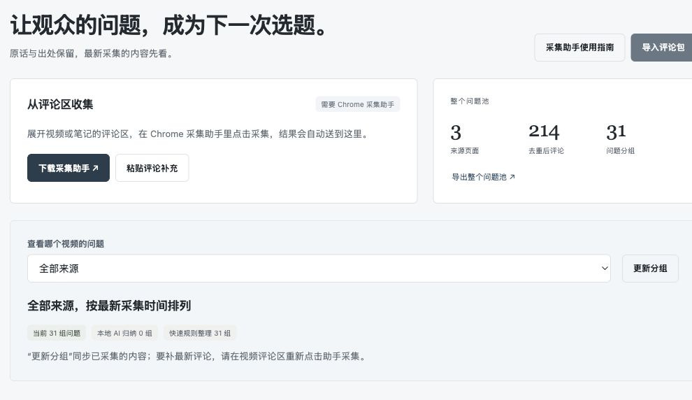
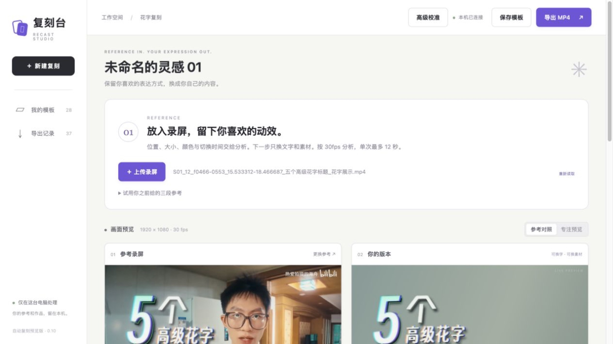

先找到观众想问的问题。
数码内容从使用场景切入，科普内容从一个具体疑问切入。一条视频，先明确最想回答什么。
从科技数码到知识科普。这里是我的方法、工具与实际制作记录。
HOW I WORK / 04
数码内容从使用场景切入，科普内容从一个具体疑问切入。一条视频，先明确最想回答什么。
先给现象或效果，再补必要背景。压缩重复铺垫，口播讲到操作，画面就给出对应演示。
核对原理、数据和适用条件，资料有分歧就标注待确认。把专业内容讲简单，也保留它的准确性。
AI WORKFLOW / 05
我会使用 GPT、Claude 和 Codex，
帮助自己和团队提高工作效率。
配合任务使用，最终判断由我完成。

取 A7 Pro Max、Reno16、Find X9 三条已发布视频的顶层评论。工作台先筛出 31 条候选疑问，我回看原评论，再按账号方向和拍摄条件选出 4 个题。
去掉玩笑，补上规则漏掉的需求；每张选题卡保留原评论编号。

使用 GPT、Claude 辅助整理资料和推敲表达，再用「稿件工作台」把反馈拆成待办，对照两版增删、试读核对口播时长。

用 Claude 和 Codex 开发「剪辑助手」：放入文案、旁白和素材，用 Whisper 转写旁白、对齐文案，剪气口并粗排素材。
英俊的苹果电脑技巧视频：AI 辅助粗剪后，我继续调整视频节奏、视觉效果和包装。

用「拾片」收集参考视频，用 Eagle 找花字、动效与音效；「复刻台」提取参考关键帧，对照调整花字节奏、导出透明背景动效，配合 Remotion 制作视频。

初剪后，在「审片台」逐段回看，记录节奏、口播和画面对不上的位置，附上对应截图，再到剪映修改。
我负责逐段回看，工具保存时间码、截图与修改清单。
为两位博主制作口播数字分身和克隆音色，用于内部测试和正式发布的视频。
博主来不及出镜时，用数字分身补充坐播片段。
口播出现个别错误时，只补配说错的句子。